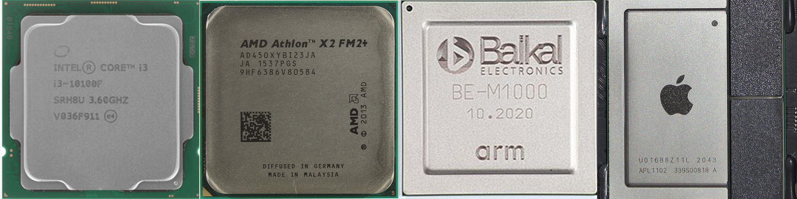

На сегоднешний день выбор процессора очень сложен, нужно понимать что такое:
Центральный процессор (ЦП; также центра́льное процессорное устройство — ЦПУ; англ. central processing unit, CPU, дословно — центральное обрабатывающее устройство, часто просто процессор) — электронный блок либо интегральная схема, исполняющая машинные инструкции (код программ), главная часть аппаратного обеспечения компьютера или программируемого логического контроллера. Иногда называют микропроцессором или просто процессором.
Ассортимент процессоров для компьютера в данный момент очень большой, есть такие компании как: Байкал, Apple, Intel, AMD
Ядро – самый главный элемент центрального процессора. Оно представляет собой часть процессора, способное выполнять один поток команд. Ядра отличаются по размеру кэш памяти, частоте шины, технологии изготовления
Казалось бы, если в системе больше процессоров, то выше её производительность (на задачах, способных задействовать все ресурсы). Однако, если стоимость коммуникаций между ними слишком велика, то весь выигрыш от параллелизма убивается длительными задержками на передачу общих данных. Именно это наблюдается в многопроцессорных системах — как физически, так и логически они находятся очень далеко друг от друга. Для эффективной коммуникации в таких условиях приходится придумывать специализированные шины, такие как Intel® QuickPath Interconnect. Энергопотребление, размеры и цена конечного решения, конечно, от всего этого не понижаются. На помощь должна прийти высокая интеграция компонент — схемы, исполняющие части параллельной программы, надо подтащить поближе друг к другу, желательно на один кристалл. Другими словами, в одном процессоре следует организовать несколько ядер, во всём идентичных друг другу, но работающих независимо.
Первые многоядерные процессоры IA-32 от Intel были представлены в 2005 году. С тех пор среднее число ядер в серверных, десктопных, а ныне и мобильных платформах неуклонно растёт.
В отличие от двух одноядерных процессоров в одной системе, разделяющих только память, два ядра могут иметь также общие кэши и другие ресурсы, отвечающие за взаимодействие с памятью. Чаще всего кэши первого уровня остаются приватными (у каждого ядра свой), тогда как второй и третий уровень может быть как общим, так и раздельным. Такая организация системы позволяет сократить задержки доставки данных между соседними ядрами, особенно если они работают над общей задачей..
Поток – это программно выделенная область в физическом ядре процессора. Такая виртуальная реализация позволяет разделять ресурсы ядра и работать параллельно с двумя разными последовательностями команд.
До примерно 2002 года единственный способ получить систему IA-32, способную параллельно исполнять две или более программы, состоял в использовании именно многопроцессорных систем. В Intel® Pentium® 4, а также линейке Xeon с кодовым именем Foster (Netburst) была представлена новая технология — гипертреды или гиперпотоки, — Intel® HyperThreading (далее HT).
Ничто не ново под луной. HT — это частный случай того, что в литературе именуется одновременной многопоточностью (simultaneous multithreading, SMT). В отличие от «настоящих» ядер, являющихся полными и независимыми копиями, в случае HT в одном процессоре дублируется лишь часть внутренних узлов, в первую очередь отвечающих за хранение архитектурного состояния — регистры. Исполнительные же узлы, ответственные за организацию и обработку данных, остаются в единственном числе, и в любой момент времени используются максимум одним из потоков. Как и ядра, гиперпотоки делят между собой кэши, однако начиная с какого уровня — это зависит от конкретной системы.
Тактовая частота процессора – частота синхронизирующих импульсов синхронной электронной схемы, которые поступают извне на вход схемы за одну секунду. Чем выше тактовая частота, тем больше операций выполняет вычислительная машина. Значение частоты измеряют в Ггерцах
Тактовая частота:
— определяется временем между активными переходами сигнала с одного значения на другое;
— измеряется в герцах, определяющих число активных переходов в секунду.
Тактовая частота характеризует производительность подсистемы (процессора, памяти и пр.), то есть количество выполняемых операций в секунду.
Однако, системы с одной и той же тактовой частотой могут иметь различную производительность, так как на выполнение одной операции разным системам может требоваться различное количество тактов (обычно от долей такта до десятков тактов), а кроме того, системы, использующие конвейерную и параллельную обработку, могут на одних и тех же тактах выполнять одновременно несколько операций.
Кэш микропроцессора — кэш, используемый микропроцессором компьютера для уменьшения среднего времени доступа к компьютерной памяти. Является одним из верхних уровней иерархии памяти. Кэш использует небольшую, очень быструю память, которая хранит копии часто используемых данных из основной памяти.
Когда процессору нужно обратиться в память для чтения или записи данных, он сначала проверяет, доступна ли их копия в кэше. В случае успеха проверки процессор производит операцию, используя кэш, что значительно быстрее использования более медленной основной памяти. Подробнее о задержках памяти см. Латентность SDRAM: tCAS, tRCD, tRP, tRAS. Данные между кэшем и памятью передаются блоками фиксированного размера, также называемыми линиями кэша или блоками кэша. Большинство современных микропроцессоров для компьютеров и серверов имеет как минимум три независимых кэша: кэш инструкций для ускорения загрузки машинного кода, кэш данных для ускорения чтения и записи данных, и буфер ассоциативной трансляции для ускорения трансляции виртуальных (логических) адресов в физические, как для инструкций, так и для данных. Кэш данных часто реализуется в виде многоуровневого кэша (L1, L2, L3, L4). Увеличение размера кэш-памяти может положительно влиять на производительность почти всех приложений, хотя в некоторых случаях эффект незначителен. Работа кэш-памяти обычно прозрачна для программиста, однако для её эффективного использования в некоторых случаях применяются специальные алгоритмические приёмы, изменяющие порядок обхода данных в ОЗУ или повышающие их локальность